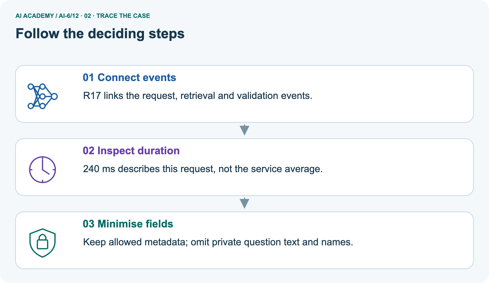
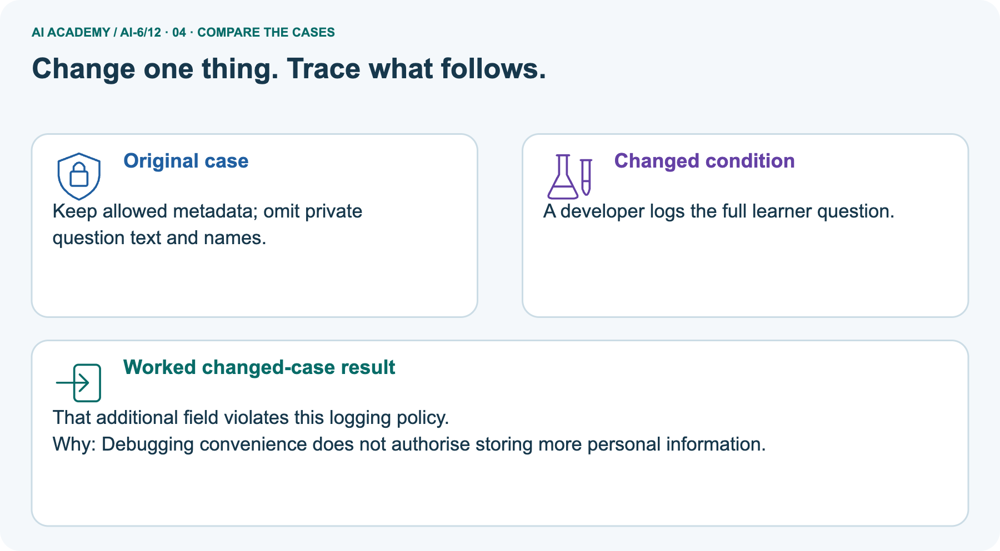
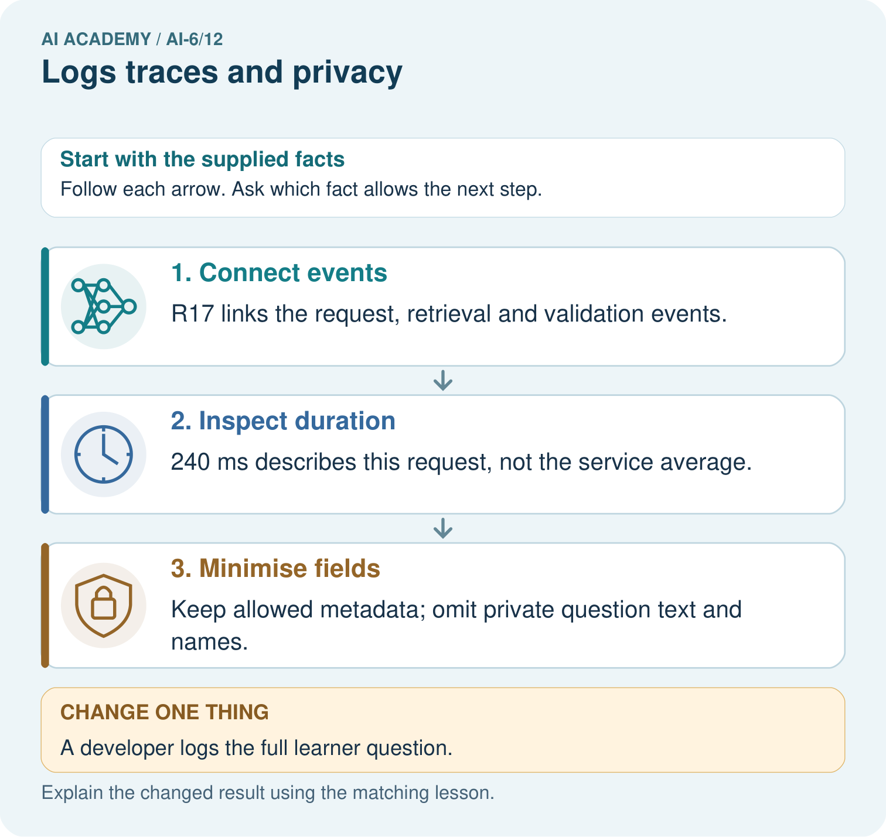
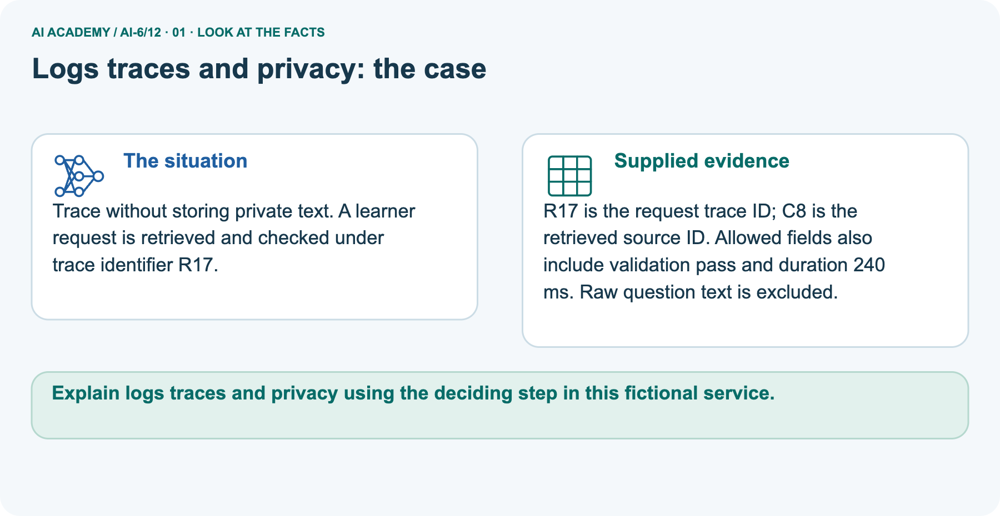
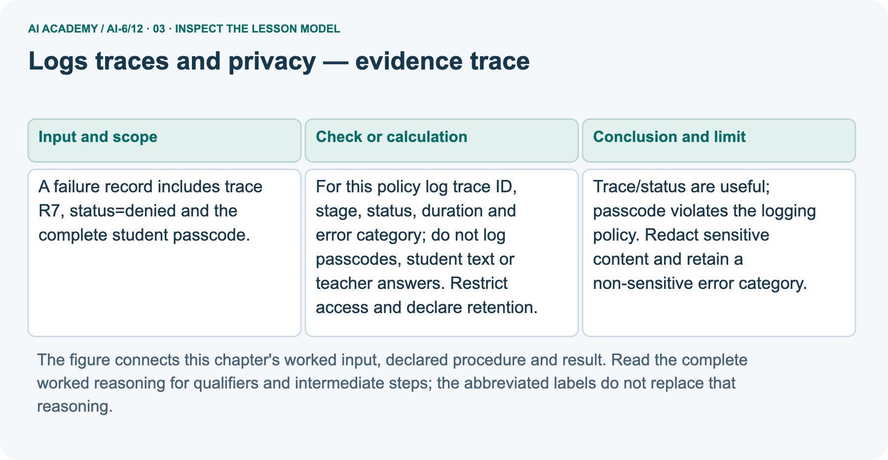
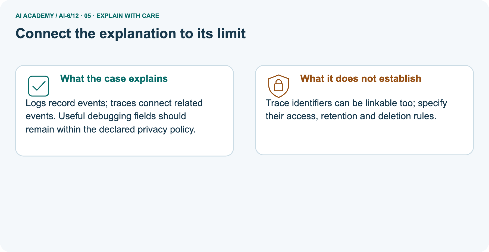
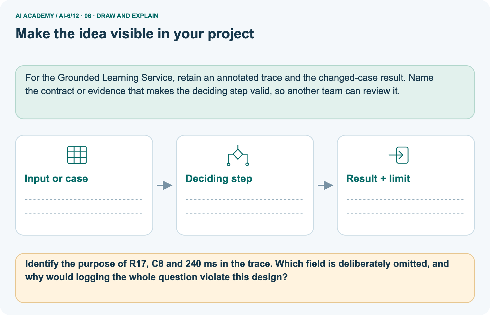

AI Academy · Level 6 · Grade 11 · Week 12 · Student lesson
Logs traces and privacy
Learn to understand, design, build, test and explain AI systems responsibly.
Project: Grounded Learning Service
THE CONNECTED WEEK
Link the events. Minimise the record. Preserve only permitted evidence.
Construct useful diagnostic metadata while excluding private content and keeping trace linkability and control limits explicit.
Keep one habit: Logging policy → field-decision table → linked-span picture → value/control probes → mock builder → independent field selection.
Main lesson · Section 1
Connect the diagnostic events without copying private content
Useful tracing needs a declared purpose, fields, access and retention.
Learning goals
I can explain the mechanism and terminology of logs traces and privacy.
I can apply the stated procedure to a new case with a traceable result.
I can identify an assumption or limitation and design a revealing follow-up.
Retrieve preserved evaluation and diagnostic evidence
Close your notes first. A rough first answer helps us choose the right starting point; it is not a score for your ability.
Without opening the old lesson, explain one key idea from Failure budgets and service objectives. Give an example and a mistake that the idea helps you avoid.
Without opening the old lesson, explain one key idea from Integration tests and fixtures. Give an example and a mistake that the idea helps you avoid.
Without opening the old lesson, explain one key idea from Least privilege and tool scopes. Give an example and a mistake that the idea helps you avoid.
After trying, check the relevant lesson or ask your teacher. Change the part of your explanation that the evidence shows was wrong.
Prerequisite and starting response
Recall Failure budgets and service objectives. Explain why a recorded result needs its input conditions and evidence source before it can support a claim.
End goal
Explain logs traces and privacy using the deciding step in this fictional service.
Earlier wording, alternatives and picture transcripts
Your learning target
Remember before reading
This week you will practise:
Explain the mechanism and terminology of logs traces and privacy
Apply the stated procedure to a new case with a traceable result
Identify an assumption or limitation and design a revealing follow-up
Retrieve what you already know
This week’s end goal
Main lesson · Section 2
Choose fields for a purpose rather than dumping the request
Metadata can help diagnosis while still needing access and retention controls.
Begin with a minimal denied-request record
A school service can record that request R7 was denied at the permission stage without copying the student’s passcode or question. The trace ID links related events; the stage and error category explain where the process stopped. Build the diagnostic record from the fields the policy actually permits.
Saving the complete request “just in case” changes the privacy consequences and is not required to preserve an honest failure report.
Define logs, trace linkage and minimisation
Logs support diagnosis, but excessive recording can expose private content. Trace IDs link stages without storing complete sensitive inputs.
Complete allowed-field and handling policy
| Main classroom logging policy | Purpose or constraint |
|---|---|
| trace_id | Connect events for one request; application-issued identifier, still potentially linkable |
| stage | Controlled category: request, authorize, lookup or validate |
| status | Controlled category: ok, denied or review |
| duration_ms | Supplied nonnegative integer duration; declare the span being described |
| error_category | Controlled non-sensitive category, not an arbitrary copied exception message |
| Excluded fields | Passcodes, raw student question/essay, teacher-answer text and names |
| Pictured retrieval extension | Its explicitly approved source_id metadata, such as C8, belongs only on lookup events |
| Access and retention | Declared classroom reviewer and deletion after the exercise; implementation not supplied |
| Scope | Fictional placeholders and mock records only; no actual private data or log store |
Name supplied and missing evidence
Earlier wording, alternatives and picture transcripts
Begin by writing the question the procedure is intended to answer. Identify the information already supplied, the information it will produce and the information still missing.
These are constructed classroom examples; they do not require live accounts, private records or an external service. Do not treat a plausible explanation as a measured outcome.
Main lesson · Section 3
Repair the record by constructing the intended metadata
Do not print the raw record while trying to demonstrate its removal.
Original main allowed fields and retention requirement
For this policy log trace ID, stage, status, duration and error category; do not log passcodes, student text or teacher answers. Restrict access and declare retention.
Complete field-by-field R7 decision
| Main R7 fixture field | Decision under the declared policy | Reason |
|---|---|---|
| trace_id R7 | Keep controlled identifier | Links stages without the full request |
| stage authorize; status denied | Keep controlled categories | Explains the stopping point |
| duration 3 ms, error permission_denied | Keep supplied mock metadata | Duration/category have declared types and purpose |
| Complete passcode value | Exclude field and value | Not needed for this diagnostic record |
| Student text or teacher answer | Exclude field and value | Outside the stated logging policy |
| Later comparison artifact | Keep sanitized diagnostic record | Honest history does not require retaining private raw content |
State the policy before processing
Before applying the procedure, write its units, denominator or decision boundary where relevant. A partner should be able to repeat each step using the same inputs.
If a required input is absent or violates the stated contract, record that condition explicitly instead of quietly replacing it with a convenient value.
Explain the visual
Point to the input, the deciding step and the result in this week’s visual. Explain the same step in ordinary words. A picture helps when you can say what each part represents.
Earlier wording, alternatives and picture transcripts
Logs traces and privacy — evidence trace
Connect the picture and the explanation
Main lesson · Section 4
Change one logged field and predict the policy failure
Keep the same diagnostic purpose and allowed-field rules.
Current task and response
A failure record includes trace R7, status=denied and the complete student passcode. Show the intermediate steps and give the conclusion with its scope.
Predict the full-question picture change
Change: A developer logs the full learner question.
Check after predicting
Prediction: That additional field violates this logging policy.
Reason: Debugging convenience does not authorise storing more personal information.
Earlier wording, alternatives and picture transcripts
Compare a familiar case with a changed case
Change one thing in the pictured case
Main lesson · Section 6
Follow trace and source identifiers across the pictured stages
Keep span duration separate from averages and from overlapping component times.
Main unsafe record and policy-compliant repair
A failure record includes trace R7, status=denied and the complete student passcode.
Trace/status are useful; passcode violates the logging policy. Redact sensitive content and retain a non-sensitive error category.
Preserve only the corrected diagnostic record
Compare the intermediate evidence with the final statement. Explain why each number or decision follows from the stated inputs. The conclusion belongs to this scenario and procedure; changing the inputs, evaluation population or authority can change what it establishes. Retain a policy-compliant diagnostic record without passcodes, student text or teacher answers, so a later revision can be compared honestly.
Separate pictured trace, source and complete timing scope
Trace without storing private text. A learner request is retrieved and checked under trace identifier R17.
R17 is the request trace ID; C8 is the retrieved source ID. Allowed fields also include validation pass and duration 240 ms. Raw question text is excluded.
The main denied request uses trace R7. The picture is a separate request R17 with retrieved source C8 and supplied request duration 240 ms. R17 connects related events; C8 names the source under this pictured metadata policy; 240 ms describes one request span, not the service average. The local extension uses mock lookup 80 ms and validation 20 ms spans linked to R17.
They can be nested inside the request span, so do not add them to 240 as independent extra work. No timing is actually measured by the example.
Trace related events and permitted fields



Read the picture one step at a time
Logs record events; traces connect related events. Useful debugging fields should remain within the declared privacy policy.
One trace links events without carrying the learner question
Predict adding the full learner question
Change one thing: A developer logs the full learner question. Predict the result before checking the explanation. What remains the same?
Check after predicting



Explain omitted content and linkability limits
Trace identifiers can be linkable too; specify their access, retention and deletion rules.
Read the labelled picture: Identify the purpose of R17, C8 and 240 ms in the trace. Which field is deliberately omitted, and why would logging the whole question violate this design?
Earlier wording, alternatives and picture transcripts
Learn from the worked case
Cover the result before checking it. Say what is given, choose the procedure, and follow one step at a time. Then uncover the result and explain your first mismatch. Ask why a step is allowed, not only what number it produces.
A pictorial worked case: Logs traces and privacy
The facts we will use



Why this result follows
What this example does not establish
Main lesson · Section 7
Minimise values as well as field names
A trace ID can still link events to a person or private record through other data.
Core linkability and access qualification
A trace ID can still be linkable; minimisation and role-controlled access remain necessary.
A useful check asks what would make the reasoning fail. Distinguish a failure to execute the declared procedure from a weakness in the procedure itself.
The first may require a correction; the second requires an explicitly revised method and new evidence. Preserve unsuccessful cases so an improved result cannot hide the original problem.
Complete value, field and control-scope probes
| Logging probe | Expected outcome or limit |
|---|---|
| Main R7 metadata only | Keep declared trace/stage/status/duration/error fields |
| Raw passcode, question or teacher text added | Violates policy; omit from emitted diagnostic record |
| Arbitrary private message in error_category | Reject; use declared non-sensitive categories |
| Boolean or negative duration | Reject under exact nonnegative-integer rule |
| C8 source ID attached to lookup event | Permitted only under the explicit pictured retrieval extension |
| Source ID attached to unrelated event | Reject in the local builder’s contract |
| A record has only allowed field names | Still validate values and purpose; identifiers can be linkable |
| Access/retention policy is printed | Declaration only; does not prove access enforcement or deletion occurred |
| One240 ms request fixture | Not the service mean, percentile or future latency guarantee |
Guided explanation and repair
A report omits this qualification: A trace ID can still be linkable; minimisation and role-controlled access remain necessary. Explain how omitting it could change a reader's interpretation, and write an accurate replacement.
Earlier wording, alternatives and picture transcripts
Locate the earliest unsupported step
Main lesson · Section 8
Practise useful metadata and deliberate omissions
Explain why a field is needed and why an excluded value is not.
Current explanation and guided scope check
Explain the weekly mechanism in your own words. Use the worked scenario to name its input, decision rule and output.
Supported W2 record
Use workbook W2 for the connected example “Logs traces and privacy”. First fill the input and rule boxes. Try the middle steps before asking for a hint. After a hint, try the next step yourself.
| Plan | Do | Check |
|---|---|---|
| What is given? Which rule or procedure applies? | Record each intermediate step. | Does the result follow? What remains unknown? |
Explain your trace to a partner. Your partner points to one step to check. Swap roles on the next case. Each person writes their own explanation.
Individual linkability-limit check
Use the worked case for Logs traces and privacy. Proposed explanation: “The worked result establishes every future case”. Decide whether this explanation is supported.
Point to the step or supplied fact that decides; explain your repair if needed.
Answer on your own before discussion. If you are unsure, say which step you need help with.
Trace-picture response
Identify the purpose of R17, C8 and 240 ms in the trace. Which field is deliberately omitted, and why would logging the whole question violate this design?
Reserve independent essay/guide field selection
This is supported practice. Keep the separately named independent case for an attempt before feedback.
Earlier wording, alternatives and picture transcripts
Practise with less help: Trace the worked case
Check your reasoning
Explain the picture
Main lesson · Section 9
Run the complete metadata-construction and emission audit
Inspect only the intended emitted records, not an unsafe raw-data dump.
Current passcode-in-record investigation
A failure record includes trace R7, status=denied and the complete student passcode. Show the intermediate steps and give the conclusion with its scope.
Complete runnable mock builder and exclusion checks
"""Allowlisted metadata records from fictional fixtures; no real logs or secrets."""
import json
import re
POLICY={'access':'designated classroom reviewer',
'retention':'delete mock records after this classroom exercise',
'raw_text':'excluded'}
def event(trace_id,stage,status,duration_ms,error_category='none',source_id=None):
if type(trace_id) is not str or not re.fullmatch(r'[A-Z][0-9]{1,8}',trace_id):
raise ValueError('invalid trace ID format')
if stage not in ('request','authorize','lookup','validate'):
raise ValueError('invalid stage')
if status not in ('ok','denied','review'):
raise ValueError('invalid status')
if type(duration_ms) is not int or duration_ms<0:
raise ValueError('invalid duration')
if error_category not in ('none','permission_denied','missing_source',
'invalid_request','dependency_failure','output_mismatch'):
raise ValueError('invalid error category')
record={'trace_id':trace_id,'stage':stage,'status':status,
'duration_ms':duration_ms,'error_category':error_category}
# The pictured retrieval policy explicitly permits this extra source-ID field.
if source_id is not None:
if stage!='lookup' or type(source_id) is not str or not re.fullmatch(r'C[0-9]{1,8}',source_id):
raise ValueError('invalid retrieval source ID')
record['source_id']=source_id
return record
raw_mock={'trace_id':'R7','stage':'authorize','status':'denied','duration_ms':3,
'error_category':'permission_denied',
'passcode':'fictional-passcode-placeholder',
'student_text':'fictional private question',
'teacher_answer':'fictional private guide text'}
# Build the intended record; never serialize or print the entire raw_mock.
safe=event(raw_mock['trace_id'],raw_mock['stage'],raw_mock['status'],
raw_mock['duration_ms'],raw_mock['error_category'])
trace=[event('R17','request','ok',240),
event('R17','lookup','ok',80,source_id='C8'),
event('R17','validate','ok',20)]
serialized=json.dumps([safe,*trace])
assert set(safe)=={'trace_id','stage','status','duration_ms','error_category'}
assert all(raw_mock[key] not in serialized for key in ['passcode','student_text','teacher_answer'])
assert {r['trace_id'] for r in trace}=={'R17'}
assert trace[0]['duration_ms']==240 and trace[1]['source_id']=='C8'
print('Declared classroom policy, not implemented controls:',POLICY)
print('Main minimized record:',safe)
for row in trace:print('Separate pictured trace metadata:',row)
print('The 240 ms request duration is one supplied fixture value, not a service average.')
print('Request span can include lookup/validation spans; do not add nested durations as independent work.')
print('Trace/source IDs remain linkable. Access control and deletion are declared, not enforced by this builder.')
Expected metadata, validated fields and control limits
Predict the safe R7 record before running or tracing. The code uses fictional private placeholders but never prints or serializes the raw mock. It builds explicit metadata with controlled stages/statuses/error categories and validates duration/identifier shapes. It checks that the tested private placeholder values are absent from all emitted JSON.
The pictured R17/C8 events are separate mock span records; no timer runs. The builder does not implement a real log store, authentication, retention deletion or universal privacy guarantee. Application-issued identifiers remain linkable; preserving failed-case evidence means a policy-compliant diagnostic artifact, not retaining raw private text.
Evidence ledger and reflection
| Record | Your evidence |
|---|---|
| Given input and fixed rule | |
| Prediction before checking | |
| Actual result, or “not run” | |
| First mismatch and one explanation | |
| Boundary or missing input and expected response |
On paper, trace the supplied procedure. If code is provided, predict before running it in a local practice file. Never write an expected answer as though it were an observed run.
Before trying: what do I expect, and why? While trying: which step could first go wrong? Afterwards: what did I actually observe, and what should change? Keep “not run” if you only traced the procedure.
Earlier wording, alternatives and picture transcripts
Predict, investigate and preserve the evidence
Plan → try → check
Main lesson · Section 14
Try alone: select permitted fields from a new mixed record
Use the fixed policy and do not invent missing metadata.
Complete independent essay/guide/metadata task
Logs contain user essay, teacher guide, stage=lookup, duration=12 ms and trace T8. Select allowed fields.
First attempt and support record
Attempt this case before feedback. Record any help. Earlier examples below are further practice; a case already practised with feedback cannot establish fresh transfer.
Feedback after trying
Attempt the independent case before hints. Record whether you worked alone, used a hint or followed a model. After feedback, fix the first unsupported step and explain why it changed.
A later check uses a changed case, not a copied answer.
Earlier wording, alternatives and picture transcripts
Independent case: Apply a new case independently
Attempt this without hints
Logs contain user essay, teacher guide, stage=lookup, duration=12 ms and trace T8. Select allowed fields.
Record support used: none, hint or teacher explanation. After feedback, a different case is needed to demonstrate independence.
Use feedback to improve
Main lesson · Section 11
Save the diagnostic schema with access and retention requirements
Keep sanitized failure evidence and explicitly identify controls still unimplemented.
Project task and artifact
Add a labelled logs traces and privacy evidence sheet to Grounded Learning Service. Show how you can explain the mechanism and terminology of logs traces and privacy.
Use the supplied fictional case and keep its inputs, intermediate steps, calculation or prediction, and limitation. Connect this record to last week’s record; a matching answer without a trace is insufficient.
| Project evidence | Record |
|---|---|
| Component and version | |
| Inputs permitted at prediction time | |
| Trace and comparison with earlier work | |
| Failure, limit and human review |
Actual run or trace and limitations
For the Grounded Learning Service, retain an annotated trace and the changed-case result. Name the contract or evidence that makes the deciding step valid, so another team can review it.
Earlier wording, alternatives and picture transcripts
Evidence for your project
Main lesson · Section 16
Finish with a useful trace and no unnecessary private content
A minimal record still requires controlled access, retention and honest measurement claims.
Retrieve and explain
Close your notes. Explain this goal in your own words: Explain the mechanism and terminology of logs traces and privacy
Plan a changed-case return
If you are unsure, return to the worked picture and explain one arrow. If you are ready, change an input or assumption and justify your prediction.
Save your workbook evidence. At the next review, try a different case before opening your old answer.
Reference bank and extra practice
Choose the reference that helps your next step.
Reference · Use service vocabulary precisely
Reference · Section 5
Reference · Use service vocabulary precisely
Connect each term to an input, operation, evidence source or outcome.
Vocabulary and your explanation
| Word | Meaning |
|---|---|
| Trace ID | An identifier connecting events within an operation |
| Minimisation | Keeping only data needed for the declared purpose |
| Error category | A non-sensitive label for a failure class |
Extra challenge · Explain a stronger case
Reference · Section 10
Extra challenge · Explain a stronger case
Choose the next challenge after the main route.
Explain,repair and extend
Explain the weekly mechanism in your own words. Use the worked scenario to name its input, decision rule and output.
A report omits this qualification: A trace ID can still be linkable; minimisation and role-controlled access remain necessary. Explain how omitting it could change a reader's interpretation, and write an accurate replacement.
For the worked scenario, propose one additional case that could reveal a failure, describe its expected outcome before running it, and explain what would need to remain fixed for a fair comparison.
Do not reuse W4 as a new final test after receiving feedback.
Explain → apply → challenge
Reference · Check the service reasoning and its limits
Reference · Section 12
Reference · Check the service reasoning and its limits
Use after practice; keep the selected independent case for its first attempt.
Current explanation and response
Complete the supported workbook tasks before attempting W4 independently. Record any hints or help used. After feedback, use the teacher's fresh retry rather than copying the earlier answer.
For a project, select a relevant new case, predict the outcome from the declared rule and preserve the result alongside any revision.
For the worked scenario, propose one additional case that could reveal a failure, describe its expected outcome before running it, and explain what would need to remain fixed for a fair comparison.
Do not reuse W4 as a new final test after receiving feedback.
Extra practice · Revisit the complete trace
Reference · Section 13
Extra practice · Revisit the complete trace
Predict before reading the supplied steps.
Complete trace and evidence
Complete evidence record
Logs traces and privacy — evidence trace
Follow the input through the stated procedure to its result. Cover the result first, predict it, then explain every intermediate step. The text/table accompanies the figure so the example can be read without colour.
Reference · The earlier route checklist
Reference · Section 15
Reference · The earlier route checklist
Use one main route rather than repeating the lesson.
Targets,route and first prediction
Start with this question: Trace without storing private text. A learner request is retrieved and checked under trace identifier R17.
| By the end, I can | How I will show it |
|---|---|
| Explain the mechanism and terminology of logs traces and privacy | Explain the deciding step, show a trace or test, and state one limit. |
| Apply the stated procedure to a new case with a traceable result | Explain the deciding step, show a trace or test, and state one limit. |
| Identify an assumption or limitation and design a revealing follow-up | Explain the deciding step, show a trace or test, and state one limit. |
Remember → watch and explain → try with help → investigate → try independently → keep project evidence. Your teacher may spread this lesson across several classes.
Keep your first prediction. Compare it with what the evidence shows and explain any change.
Extra practice · Predict,check and repair
Reference · Section 17
Extra practice · Predict,check and repair
Keep supported feedback separate from the independent case.
First supported question and optional hint
Trace without storing private text. A learner request is retrieved and checked under trace identifier R17.
Which labelled step matches this detail? Keep allowed metadata; omit private question text and names.
1. Inspect duration
2. Connect events
3. Minimise fields
Hint if needed: Read the steps in the pictorial case. Match the supplied detail to the stage that performs or records it.
Practice 1: explain the deciding evidence
Check after the first attempt
After your attempt, compare with the supported explanation: Minimise fields Keep allowed metadata; omit private question text and names. Logs record events; traces connect related events.
Useful debugging fields should remain within the declared privacy policy.
Changed-case question and optional hint
Changed-case practice: A developer logs the full learner question. Which conclusion is supported by the supplied facts?
1. We can decide the result without examining the changed input or the procedure.
2. That additional field violates this logging policy.
3. This one example guarantees correct results for every future input.
Hint if needed: Use the changed condition and the deciding step in the pictorial trace. The answer must say what follows from those facts.
Practice 2: explain the deciding evidence
Check after the changed attempt
After your attempt, compare with the supported explanation: That additional field violates this logging policy. Debugging convenience does not authorise storing more personal information.
Repair and retain the record
Review Failure budgets and service objectives (ai-6/11). Goal: Explain the mechanism and terminology of failure budgets and service objectives. Short practice: Calculate the maximum allowed failures among 100 requests.
Does 97 successes and 3 failures meet the target, and what changes after one failure becomes a success?. Return to this week and explain what you changed.
Review Integration tests and fixtures (ai-6/9). Goal: Explain the mechanism and terminology of integration tests and fixtures. Short practice: Follow request N through the fixture and adapter.
Which source and item should appear in the reply, and what precisely fails when the adapter returns M?. Return to this week and explain what you changed.
Review Least privilege and tool scopes (ai-6/6). Goal: Explain the mechanism and terminology of least privilege and tool scopes. Short practice: Classify read S2, write S2 and read S5 as permitted or denied.
Identify the operation or station mismatch for each denial, then reconsider after read S5 is added to trusted scope.. Return to this week and explain what you changed.
Use Download completed work in the hosted lesson to export your answers, reflections, practice feedback and code-run evidence. Open the HTML copy to read or print it.
Drafts stay in this browser when storage is available; clear drafts on a shared device.
Earlier wording, alternatives and picture transcripts
Use this supported practice once, in the browser or on paper. Keep the reserved independent assessment for a separate first attempt before teacher feedback.
Repair a missing building block
Keep your completed work
Reference · Six-picture concept journey
Reference · Section 18
Reference · Six-picture concept journey
Choose the picture that supports the current explanation.
01. Logs traces and privacy: the case



Trace without storing private text. A learner request is retrieved and checked under trace identifier R17. Supplied facts: R17 is the request trace ID; C8 is the retrieved source ID.
Allowed fields also include validation pass and duration 240 ms. Raw question text is excluded.
Point to the given fact that matters most. Explain why it matters.
02. Follow the deciding steps
Connect events: R17 links the request, retrieval and validation events. → Inspect duration: 240 ms describes this request, not the service average. → Minimise fields: Keep allowed metadata; omit private question text and names.
Point to each numbered stage and explain which recorded input it uses.
03. Logs traces and privacy — evidence trace



Logs traces and privacy — evidence trace.
A failure record includes trace R7, status=denied and the complete student passcode. | For this policy log trace ID, stage, status, duration and error category; do not log passcodes, student text or teacher answers.
Restrict access and declare retention. | Trace/status are useful; passcode violates the logging policy. Redact sensitive content and retain a non-sensitive error category.
Read the labels and values. Explain the relationship the model shows.
04. Change one thing. Trace what follows.
Original case: Keep allowed metadata; omit private question text and names. Changed condition: A developer logs the full learner question. Expected result: That additional field violates this logging policy.
Reason: Debugging convenience does not authorise storing more personal information.
Predict before checking the worked changed-case result. Name what changed and what the supplied facts allow you to conclude.
05. Connect the explanation to its limit



Logs record events; traces connect related events. Useful debugging fields should remain within the declared privacy policy. Limit: Trace identifiers can be linkable too; specify their access, retention and deletion rules.
Explain the case, then point to a limit on the claim.
06. Make the idea visible in your project



For the Grounded Learning Service, retain an annotated trace and the changed-case result. Name the contract or evidence that makes the deciding step valid, so another team can review it.
Draw your input, deciding step, result and limit. Supported question: Identify the purpose of R17, C8 and 240 ms in the trace. Which field is deliberately omitted, and why would logging the whole question violate this design?
Draw your project trace and justify the deciding step using evidence.